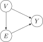

In class during Week 6, I spent too long covering the “base” DGP which generates Random Variables \(Y\) and \(E\), such that \(Y\) and \(E\) are statistically correlated despite “truly” being independently-generated random values in \(\{0, 1\}\). Spent too long, meaning, we didn’t get to cover the case of the do-Calculus modified DGP, where we force\(E \leftarrow 1\) within the DGP itself, so that we could see how this ability to intervene in the DGP is what allows us to infer causation from correlation!
So, in this writeup, I’d like to write it out, so that rather than me trying to sprint through it on the board in the classroom, you can process it at your own pace 💆
The “Custom-Cooked” DGP
I call it “custom-cooked” because, like the case I mentioned in class where we have to generate clustered data in order to see whether our unsupervised clustering algorithms “work” (whether they successfully recover the latent clusters), here we create a DGP which is “cooked up” in such a way that it will generate a pair of statistically-correlated RVs which are in fact (under the surface) generated by entirely separate, non-interrelated random number generations.
So, for the part I did get to in class, we have the following “base” DGP.
Our Data-Generating Process
Note\(\text{DGP}[(V,E,Y)]\): The Private School \(\leadsto\) Success Pipeline 🤑
\(Y \leftarrow \textsf{if }(V = 1)\textsf{ then }0\textsf{ else }U_3\)
Here, rather than immediately jumping to the chalkboard (which is maybe helpful for e.g. “pure” prob/stats classes, but less helpful for data science classes!), it may have helped if I instead showed what it would look like to write code implementing this DGP, then running it to generate datapoints, and using tools from 5100 to estimate correlations between variables. So, let’s do that here! The following code literally just implements the DGP as closely as possible, where we make it clear that each row is one individual person by also generating a name each time the DGP is run:
So, what this means is, we could generate a population using this DGP, and then use our tools from 5100 to analyze its properties. Here we generate a population of \(N = 5000\) people:
Code
set.seed(5450)N <-10000private_school_df <-tibble(name=character(), v=numeric(), e=numeric(), y=numeric())# Run DGP N times, to generate size-N populationfor (i in1:N) { cur_draw <-run_dgp(1/2, 1/3, 1/3) private_school_df <-bind_rows(private_school_df, cur_draw)}private_school_df |>head()
name
v
e
y
Alexander
1
0
0
Gabriel
1
0
0
Saabiqa
1
0
0
Safar
1
0
0
Hafsa
1
0
0
Chris
1
0
0
The (seemingly minor but nonetheless important) point of doing all that stuff on the board rather than R, in this case, was to show how even if we have an infinite population we still get this problem—in other words, it’s not a problem that can be solved by just taking more and more samples.
But, we can start to see the problem even with our finite R-generated population. So, please keep in mind how the above code is what you don’t see—what you do see is, you show up to work one day with the above-generated dataset saved as private_school_data.csv, ready for you to analyze (but, again, you don’t get to see the code that generated it!)
To make the point in an even more emphatic, over-the-top way, here we save the dataset as private_school_data.csv, then in the next section you’ll put your data scientist hat on and reload it:
Rows: 10000 Columns: 4
── Column specification ────────────────────────────────────────────────────────
Delimiter: ","
chr (1): name
dbl (3): v, e, y
ℹ Use `spec()` to retrieve the full column specification for this data.
ℹ Specify the column types or set `show_col_types = FALSE` to quiet this message.
First, what is the overall likelihood of success that we can infer from our dataset?
Code
(mean_y <-mean(private_school_df$y))
[1] 0.1674
which, if we round to three decimal places, is exactly the same as the population-wide expected value we derived on the board, \(\Pr(Y = 1) = \frac{1}{6}\), rounded to three decimal places:
Code
print(round(mean_y, 3))
[1] 0.167
Code
print(round(1/6, 3))
[1] 0.167
Where we have an issue, however, is when we start to try and interpret the correlations between the columns of this dataset! Here we compute the correlation between \(Y\) and \(E\):
Code
cor(private_school_df$y, private_school_df$e)
[1] 0.1997943
TipSymPy Sidebar
Who remembers when I randomly wrote “SymPy” on the board today? If you do, here’s one reason why I thought that was important enough to write up there: it’s (the start of) a symbolic computation system, which is different from the numeric computation system used by default in R and Python. While in general one of the benefits of symbolic computation is that we avoid rounding errors, specifically in this case another nice benefit is the ability to use code to reason about populations rather than just samples.
Here is an even-more-simplified version of some example code from SymPy’s website, showing how we can calculate the probability that the outcome of a single dice roll:
Code
from sympy import Sfrom sympy.stats import E, P, DieX_sym = Die('X', 6) # Define a six sided dieP(X_sym >3) # Probability X is greater than 3
1/2
So now, using this system, we can get the exact probabilities that we simulated using large-\(N\) simulations above:
Change in Probability After Conditioning on \(E = 1\)\(\neq\) Causal Effect of \(E = 1\)!
So, on the chalkboard, we worked (painfully) through a DAG that looked like the following:

Where we asked: given the above unobserved DGP which gives rise to the joint distribution of \((V, E, Y)\), can we assess whether or not that arrow \(E \rightarrow Y\) should be there? Or in other words, can we assess whether \(E\) has a causal effect on \(Y\)?
Using only the tools of probability theory, the best approach we have for trying to answer this is to compute the following two quantities:
\(s_{\text{overall}} \definedas \Pr(Y = 1)\)
\(s_{\text{private}} \definedas \Pr(Y = 1 \mid E = 1)\)
And then, our intuition is that if \(s_{\text{private}} > s_{\text{overall}}\), then receiving a private school education increases our chances of success—due to the slipperyness of language when it comes to association vs. causation, it is easy to then interpret this as saying, “Private school education causes an increase in likelihood of success”. But, that’s exactly why statistics professors hit students on the head with the “correlation does not imply causation” stick! Is because, we can’t say that!
Usually, therefore, in those types of classes even in the best case you usually just compute these two quantities, see how \(s_{\text{private}}\) is in fact greater than \(s_{\text{public}}\) despite the lack of “true” causation, and leave it at that. So, let’s start with that step now, using our simulated population we loaded earlier.
We already found, by computing mean(private_school_df$y), that \(\Pr(Y = 1) \approx \frac{1}{6}\). So, now let’s also use what we know from 5100 to compute the conditional probability we want, \(\Pr(Y = 1 \mid E = 1)\), by subsetting our sample to include only people for whom \(E = 1\), and then re-computing \(\Pr(Y = 1)\) within this subset. First, the subset itself (giving us a df with only those individuals in the simulated population who went to private school):
Now, within this subgroup, we recompute \(\Pr(Y = 1)\) to obtain our conditional probability:
Code
mean(private_only_df$y)
[1] 0.338116
Thus giving us a value which is approximately equal to the population-level value we computed out on the board: that the conditional probability of success given private school education here is
Across everyone in the population, the likelihood of success is \(s_{\text{overall}} = \frac{1}{6}\), but
Among individuals who went to private school, the likelihood of success is \(s_{\text{private}} = \frac{1}{3}\)
So, private schools can justifiably claim, in this (hypothetical) case, that attending their school doubles one’s likelihood of success! The question that remains is, should we interpret this “doubling” as essentially denoting…
A verb attached to “attending private school” (a thing that “attending private school” does is “doubles success chance”); or
A property of the emergent distribution, i.e., the less strong claim that \(Y = 1\) occurs within the population with \(E = 1\) at twice the rate that \(Y = 1\) occurs within the overall population
The \(\textsf{do}\) Operator
Now, let’s see why having the operator \(\textsf{do}(\cdot)\) launches us beyond this fallacy, a fallacy that we invetiably fall into no matter how carefully/thoughfully we use the tools given to us by probability theory, since (given an antecedent argued for in, e.g., (elster2015explaining?)) “associations” are pretty much never what we actually care about! The “point” of science (again, under antecedents argued for in that book) is to hypothesize and then evaluate causal claims! So, let’s see how the \(\textsf{do}\) operator helps us here. Now, we’ll add a third value to our collection of things we can compute to try and evaluate the \(E \rightarrow Y\) relationship:
Here, \(\textsf{do}(E = 1)\) means diving into the DGP below the surface and changing it so \(E = 1\)… Setting\(E\) to be 1 in the DGP itself, producing a new DGP, which in this case looks as follows:
Note\(\text{DGP}[(V, E, Y) \mid \textsf{do}(E = 1)]\): Intervening to Set\(E \leftarrow 1\)
\(Y \leftarrow \textsf{if }(V = 1)\textsf{ then }0\textsf{ else }U_3\)
Now, if we simulate a new population using this new DGP, rather than just subsetting the population we created earlier, we’ll be able to see how this change within the DGP is what lets us infer the causal effect of \(E\) on \(Y\)!
To get the exact value of \(\Pr(Y = 1 \mid \textsf{do}(E = 1))\), in place of the above approximation, we can use SymPy like we did earlier, changing one line:
And now we can answer our question! In the counterfactual world where everything is the same as before but now we intervene to assign the value \(1\) to \(E\) (and let the DGP operate as it did before, other than that change), the probability of success remains the same as the probability of success in the overall population:
which tells us that (within our custom-cooked world!) getting a private school education does not cause an increase in the likelihood of success.
…So yeah, that is where we would have ended up if I had planned out my timing for the Chalkboard Lab a little better, so, I just hope that reading through this can better highlight the usefulness of the \(\textsf{do}\) operator for distinguishing which associations are “just associations” and which actually correspond to causal relationships!